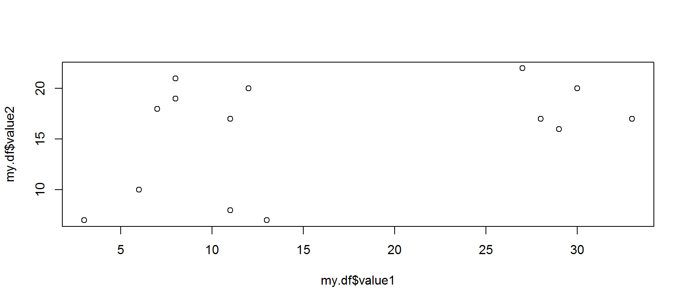
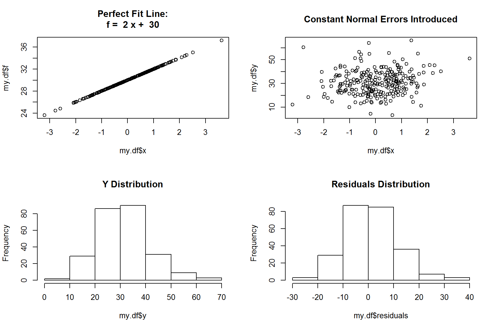
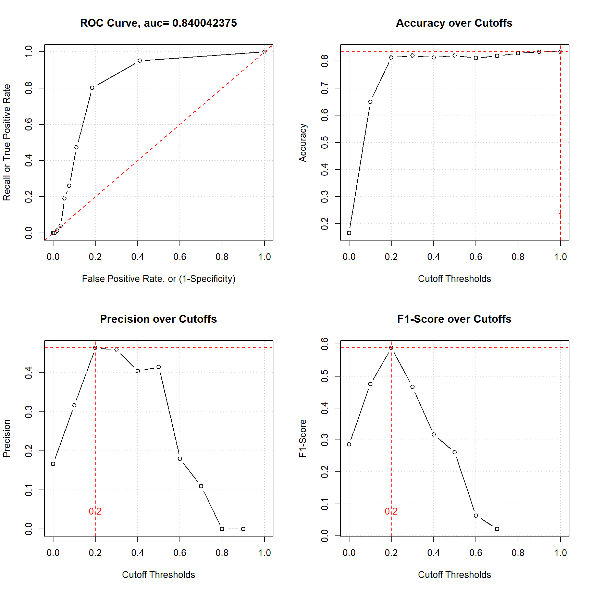

3.1 Linear Simulation
gen_slinear = function(n = 50, start = 0, intercept = 0, coef = 1, mean = 0, sd = 1) {
par(mfrow = c(2, 2))
if (start == -1)
my.df = data.frame(x = rnorm(n)) # x is normally distributed random number
else
my.df = data.frame(x = start:n) # x from 0 to 50
my.df$f = my.df$x * coef + intercept # y = coef * x
my.df$residuals = rnorm(length(my.df$x), mean = mean, sd = sd)
my.df$y = my.df$f + my.df$residuals # introduce errors
plot(my.df$x, my.df$f, main = paste('Perfect Fit Line:\nf = ', coef, 'x + ', intercept))
plot(my.df$x, my.df$y, main = 'Constant Normal Errors Introduced')
hist(my.df$y, main = 'Y Distribution')
hist(my.df$residuals, main = 'Residuals Distribution')
my.df
}
my.slinear = gen_slinear(n = 250, start=-1, intercept = 30, coef = 2, mean = 0, sd = 10)
3.1.1 Example of Random Normal X
my.slinear = gen_slinear(n = 250, start=-1, intercept = 30, coef = 2, mean = 0, sd = 10)
3.1.2 Example of Sequantial X (non-random)
my.slinear = gen_slinear(n = 250, start=0, intercept = 30, coef = 2, mean = 0, sd = 10)